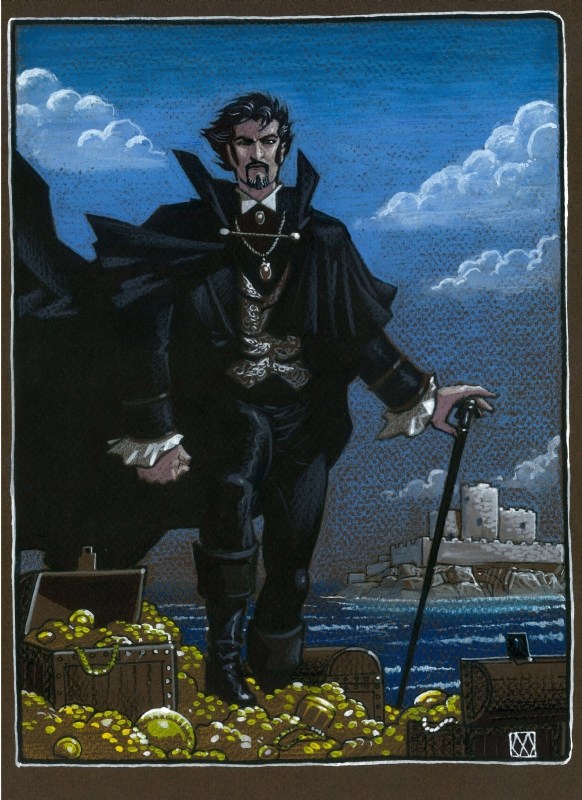
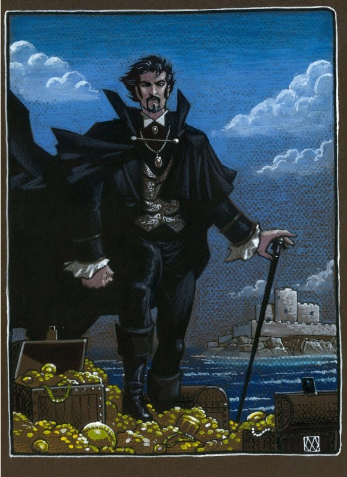

Thrown in prison for a crime he has not committed, Edmond Dantes is confined to the grim fortress of If. There he learns of a great hoard of treasure hidden on the Isle of Monte Cristo and he becomes determined not only to escape, but also to unearth the treasure and use it to plot the destruction of the three men responsible for his incarceration. Dumas’ epic tale of suffering and retribution, inspired by a real-life case of wrongful imprisonment, was a huge popular success when it was first serialized in the 1840s.